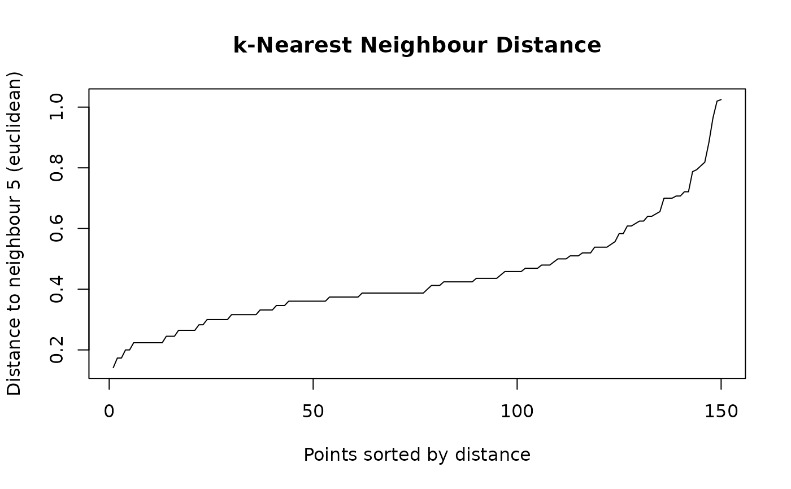

Finds the k nearest neighbours of every row of x among the other rows,
or of every row of query among the rows of x, by an exact search in
Rust. Every metric of shoal_dist() is available and the distances agree
with it exactly, but only the k nearest are kept, so the memory is
proportional to k times the number of rows rather than to the square of
it. Where a distance matrix stops being possible somewhere in the tens of
thousands of rows, a neighbour search does not.
Usage
shoal_knn(
x,
k,
query = NULL,
metric = c("euclidean", "maximum", "manhattan", "canberra", "binary", "minkowski",
"cosine", "correlation", "mahalanobis"),
p = 2,
cov = NULL,
search = c("auto", "kdtree", "brute")
)
# S3 method for class 'shoal_knn'
print(x, ...)
# S3 method for class 'shoal_knn'
plot(x, which = x$k, ...)Arguments
- x
A numeric matrix or data frame of the points to search among. Data frames are coerced to a matrix using their numeric columns (non-numeric columns are dropped). Rows containing missing or non-finite values are an error.
- k
Number of neighbours to find. Must be less than
nrow(x)whenqueryisNULL, and at mostnrow(x)otherwise.- query
Optional numeric matrix or data frame of points to find neighbours for, with the same columns as
x.NULL(default) searches the rows ofxagainst one another.- metric
Distance metric. One of
"euclidean","maximum","manhattan","canberra","binary","minkowski","cosine","correlation"or"mahalanobis".- p
Power for
metric = "minkowski". Ignored otherwise. Default2.- cov
Covariance matrix for
metric = "mahalanobis",ncol(x)square and positive definite.NULL(default) usesstats::cov()ofx, the reference set, whichever ofxandqueryis being measured. Ignored for other metrics.- search
Search algorithm:
"auto"(default),"kdtree"or"brute". See Details."kdtree"is an error for a metric the tree cannot bound.- ...
For
plot(), further arguments toplot.default();main,xlabandylabgiven here replace the defaults. Ignored byprint().- which
Which neighbour's distance to plot, between
1andx$k. Defaultx$k.
Value
An object of class "shoal_knn": a list with components id, an
integer matrix of row indices into x, and dist, a numeric matrix of
the corresponding distances. Both have one row per point searched for
and k columns, nearest first, with the row names of x or query and
column names 1 to k. k, metric and search record the call,
search being the algorithm actually used.
Details
Two exact searches are available and give identical results, tie order
included. "brute" compares every query row with every data row, in
parallel over queries; it serves every metric. "kdtree" builds an
axis-aligned kd-tree and skips regions that cannot hold a nearer point;
it serves every metric but "canberra" and "binary", whose distances
no rectangle can bound. "cosine" and "correlation" are searched
through a unit-normalised (and, for correlation, centred) copy of the
rows, on which Euclidean distance orders points exactly as the metric
does; the distances reported are still the metric itself. A tree prunes
well in a few dimensions and hardly at all beyond about ten, where the
scan is several times faster than the kd-tree searches in the dbscan and
FNN packages even on one thread. The default "auto" takes the tree when
the metric allows it and ncol(x) is at most 8, and the scan otherwise.
The tree is built in parallel, so on a large low-dimensional set the
build is a small part of the total. The tree path holds one extra copy
of x, its rows reordered so that each leaf is contiguous in memory.
The conventions follow dbscan::kNN(), so code written for its results
works on these. Without query, each row is excluded from its own
neighbours. With query, every row of x is a candidate, so a query
identical to a data row finds that row at distance zero. Neighbours are
sorted by distance, and equal distances by row index, so the result is
fully determined by the input. Rows with missing or non-finite values are
an error rather than being dropped as shoal_dist() does: dropping rows
would renumber the indices so they no longer point into the caller's
matrix.
The plot() method draws each point's distance to its k-th neighbour in
increasing order. The knee of that curve is the usual choice of eps for
shoal_dbscan() with min_samples = k + 1; the point itself counts
towards min_samples, hence the one.
See also
shoal_dist() for the full distance matrix, and
shoal_dbscan(), whose eps the plot() method helps to choose.
Examples
x <- as.matrix(iris[, 1:4])
nn <- shoal_knn(x, k = 5L)
nn
#>
#> ── k-Nearest Neighbours
#> Metric: "euclidean", Search: "kdtree"
#> Points: 150, Neighbours: 5
#> Distance to neighbour 5: min 0.1414, median 0.3873, max 1.025
head(nn$id)
#> 1 2 3 4 5
#> [1,] 18 5 40 28 29
#> [2,] 35 46 13 10 26
#> [3,] 48 4 7 13 46
#> [4,] 48 30 31 3 13
#> [5,] 38 1 18 41 8
#> [6,] 19 11 49 45 20
# The distance to the fifth neighbour, sorted: read eps off the knee.
plot(nn)

# Neighbours of new points among the rows of x, by cosine distance.
shoal_knn(x, k = 3L, query = x[c(1, 51, 101), ], metric = "cosine")
#>
#> ── k-Nearest Neighbours
#> Metric: "cosine", Search: "kdtree"
#> Points: 3, Neighbours: 3
#> Distance to neighbour 3: min 1.265e-05, median 2.874e-05, max 0.0006906